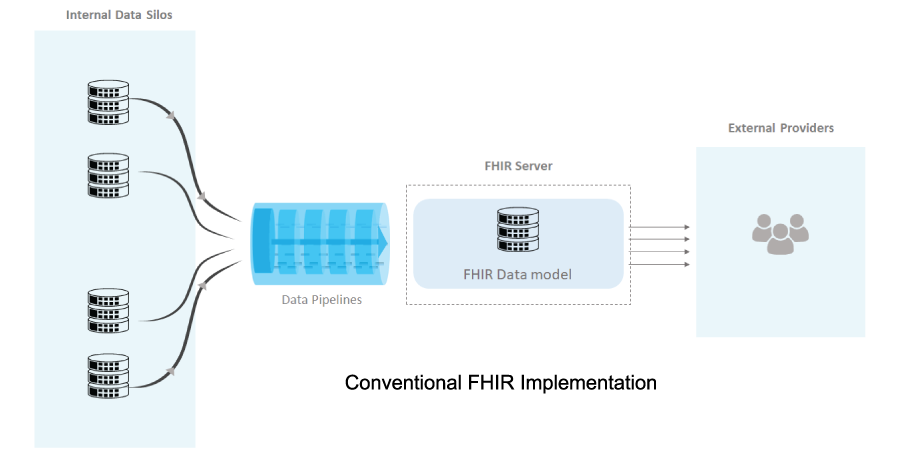
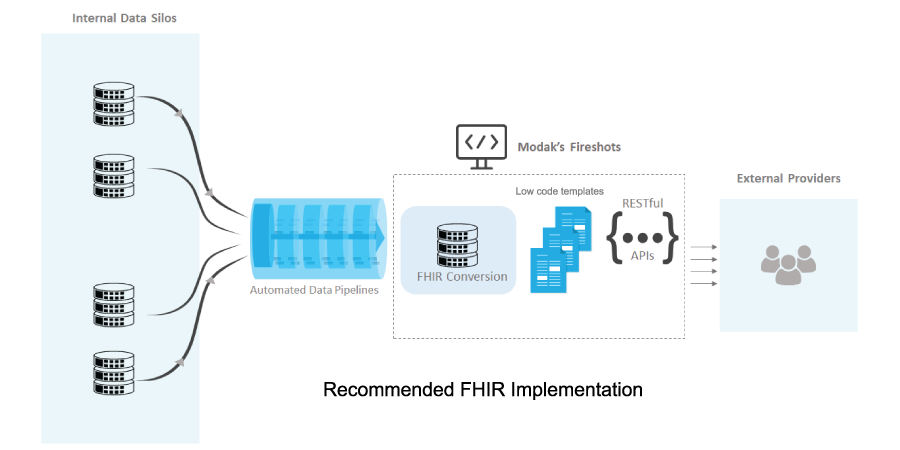

Driving interoperability in healthcare using HL7® FHIR®
Enabling FHIR will help health providers serve their customers better by improving interoperability. The faster implementation of FHIR requires handling data integration challenges and building use cases with RESTful APIs rapidly.
The exchange of information has always been a challenge in healthcare industry. As patients move from one healthcare provider to another, their Electronic Medical Records (EMRs) and other information like insurance should be made discoverable, accessible and readable to them, doctors, pharma companies, diagnostic centers and other healthcare vendors.
The emergence of Fast Healthcare Interoperability Resource (FHIR) has transformed the industry in terms of exchange of healthcare data. FHIR data standard enables seamless and on-request information exchange between healthcare applications.
It aims to define the content and structure of the key healthcare information, such as clinical data like allergies, medication and immunization tracking and diagnostic reports and administrative information like patient insurance.
However, FHIR standard throws an extensive data integration challenge to healthcare firms. For the companies to be FHIR compliant, all the operational and historic exchangeable data residing in various internal data silos within enterprises needs to be leveraged and then converted into the standards defined by FHIR.
Currently, the companies associated with healthcare are struggling with the uphill task of data integration required for enabling FHIR compliant services for exchanging critical patient related data. The current approach requires ingestion and transformation of internal data from various data sources into FHIR data model defined in FHIR server.
The approach should also have the mechanism to automatically synchronize incoming FHIR data with operational data in real time. Any changes made to the internal data silos also need to be propagated to the FHIR server. The continuous maintenance and monitoring of FHIR server data is a huge challenge. Further, the data store will grow into another large external data silo over time.

Alternatively, a promising and faster approach is to replace FHIR data store with thin templates provided by Modak’s Fireshots. The approach eliminates the necessity of storing data in FHIR compliant data model and lifts the burden off enterprise teams of maintaining FHIR data model and associate servers.
Enabling FHIR with Modak’s Fireshots
Fireshots is an existing metadata driven low-code web services framework from Modak. Fireshots has been shown to develop and deploy complex web services 5x faster than the traditional approaches. This metadata driven template approach by Modak’s Fireshots enables enterprises implement FHIR at an accelerated rate. The robust automated data pipelines ingest data quickly from various data stores, validate the data and Fireshots converts data into FHIR format on the fly, making the task of storing data in FHIR data model unnecessary. The RESTful APIs receive the FHIR compliant response and send it to the external providers.
The web services product creates RESTful APIs rapidly with the help of readymade templates. The template-based approach drastically reduces the time in building Restful APIs by selecting the appropriate template and filling in with necessary information.
The deployment requires minimum templatetesting. All this drastically reduces the time in the overall development of use cases. While traditional approaches take months to build RESTful APIs, Fireshots achieves the same in days. Fireshots is completely scalable and can easily be deployed on cloud containers for better availability delivered by Kubernetes.

Modak’s approach, a proven success
For example, consider the use case for exchanging health insurance membership information to external healthcare providers for member validation. Such implementation requires building of FHIR RESTful API that takes values like Member ID and DOB and gets matching demographic information, converts output into FHIR format and sends it to external providers. Modak has recently helped develop such FHIR RESTful API for patient search by leveraging Fireshots at a major healthcare firm in under two weeks. The implementation demonstrated the acceleration built into the Fireshots’ web services framework for developing FHIR APIs.